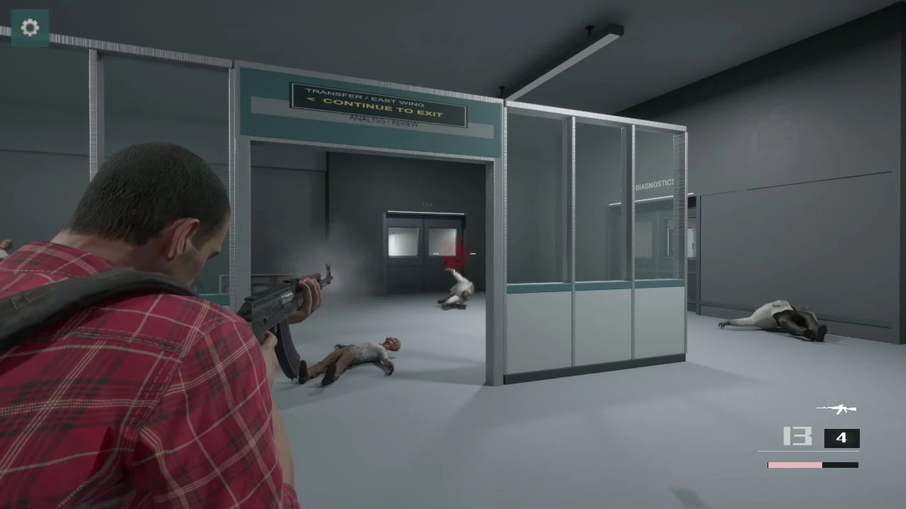
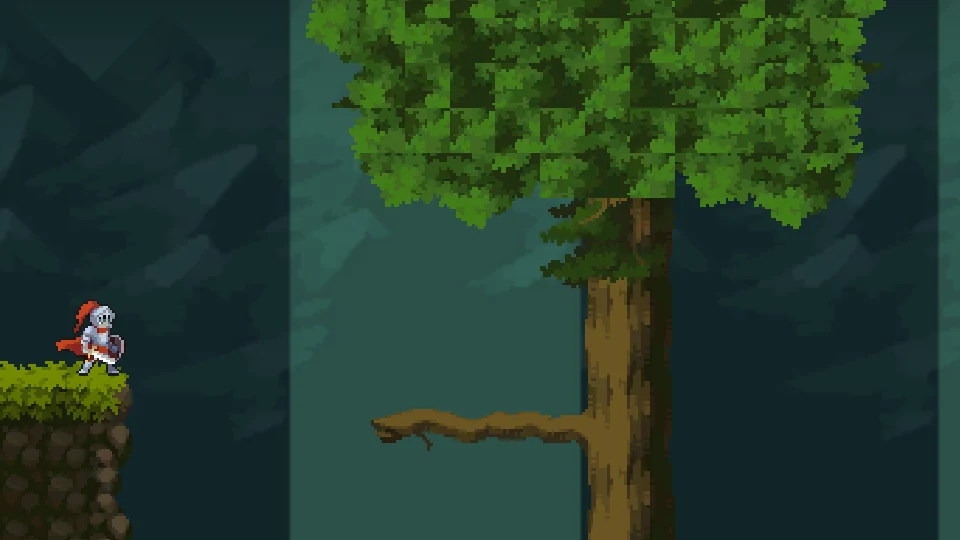
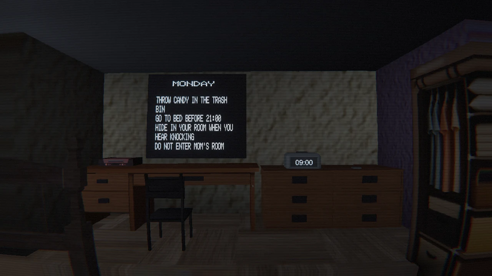
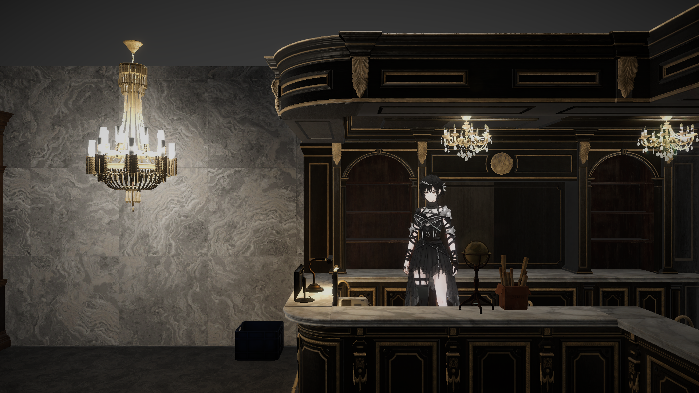
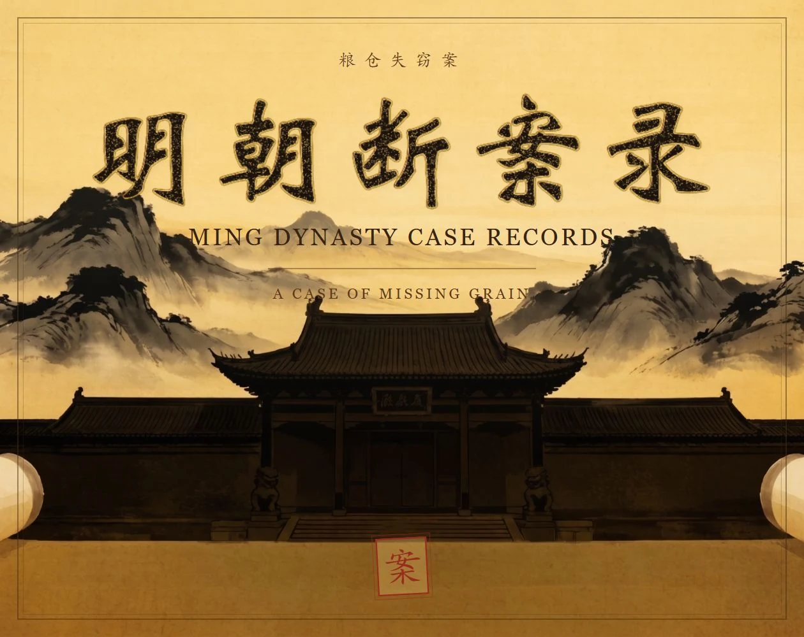
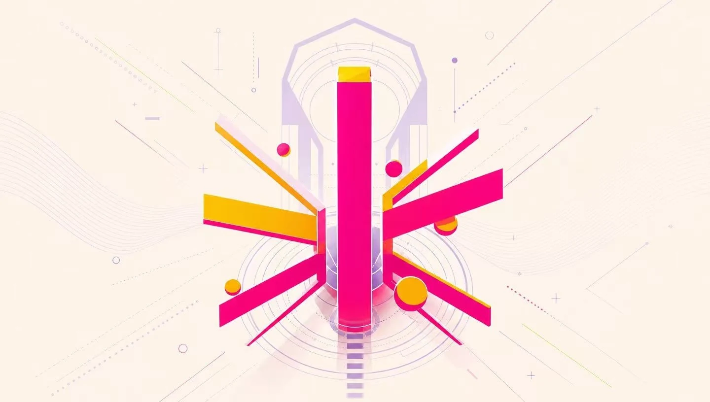

GAMES / 多个项目，不同的体验命题
我做的游戏。
从一句话的后果，到一格背包的重量。探索每个项目的玩法、真实画面，以及设计如何在迭代中改变。

02
03Unity 6 · URP / 像素动作 · 视角反转 · 六种结局
赐福THE BLESSING
力量与真相是两条独立的线：是否保留赐福、是否看见隐藏的往事，共同改变最后的选择。
探索项目与设计 →
04Unity 2022 · URP / VR · 家规与环境叙事
Good KidVR EXPLORATION
以日常物件、三真一假的家规和逐日变化的环境，搭建 VR 恐怖探索原型。
VR 开发原型
探索项目与设计 →

05Unity 2022 / 铁匠铺经营 · 回合制战斗 · 地图探索
刀歌MANAGE & FIGHT
用材料的温度与加工节奏表达锻造，用时间与生命的取舍连接经营和探索。
Windows 原型
探索项目与设计 →

06Unity 6 · C# / 点击调查 · 公堂问询 · 自由判词
明朝断案录MING DYNASTY CASE RECORDS
公开版本包含一个简体中文案件，将场景调查、证词核对与自由文本判词连成完整循环。
探索项目与设计 →
07